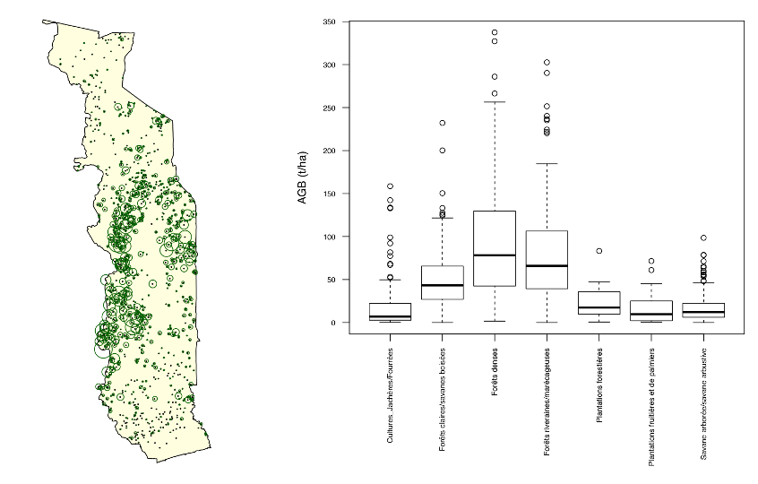

4.2.1 Analyse des données IFN
Description
La détermination de la biomasse arborée est basée sur les données de l’inventaire forestier IFN-1 réalisé en 2015/16, en utilisant les données des parcelles (coordonnées du centre de la parcelle et strate de couverture du sol IFN), ainsi que les espèces d’arbres, le diamètre à hauteur poitrine (D à 1.3m) et la hauteur de tous les arbres avec DHP ≥ 10 cm enregistrés dans un rayon de 20 mètres autour du centre de la parcelle.
Toutes les espèces d’arbres sont attribuées avec leur densité de bois basale ou infradensité, compilée par l’étude de la biomasse de Fonton et al (2018) en utilisant les bases de données GlobalWoodDensityDatabase de Zanne et al. (2009) et ICRAF Wood Density. La fonction allométrique de Chave et al. (2014) est utilisé pour estimer la biomasse aérienne des arbres sur base de la densité du bois \(\rho\), du diamètre à hauteur poitrine \(D\) et de la hauteur totale \(H\) des arbres: \(B_{aérienne} = 0.0673 (\rho D^2 H)^{0.976}\). Selon l’étude de Fonton et al. 2018 la fonction allométrique de Chave et al. (2014) est la fonction la plus approprié pour l’estimation de la biomasse aérienne des arbres au Togo.
Par la suite, les biomasses des arbres en surface sont additionnées pour toutes les parcelles et converties en tonnes de matière sèche par hectare. Cela est fait séparément pour les arbres vivants et les arbres morts. Sur la base de la biomasse aérienne par hectare, la biomasse racinaire est estimée à l’aide du rapport racine-tige de Mokany et al (2006) pour les forêts sèches tropicales (0,563 ± 0,086 pour les forêts avec \(B_{aérienne} ≤ 20\) t/ha et 0,275 ± 0,003 pour les forêts avec \(B_{aérienne} > 20\) t/ha).
4.2.1.1 Example
Répartition spatiale des 945 placettes d’inventaire de l’IFN-1 (la taille du cercle correspond à la biomasse trouvée sur les placettes) et répartition de la biomasse aérienne dans les différentes strates de l’IFN (données en tonnes de matière sèche par hectare).
 Biomasse déterminée à partir des données IFN-1 (en tonnes de matière sèche par hectare) par strate IFN et par compartiment : biomasse aérienne des arbres, bois mort, biomasse racinaire des arbres, et biomasse totale des arbres.| Strate IFN | \(n\) | \(\\\mu\) | \(\\\sigma\) | \(\\\mu\) | \(\\\sigma\) | \(\\\mu\) | \(\\\sigma\) | \(\\\mu\) | \(\\\sigma\) |
|---|---|---|---|---|---|---|---|---|---|
| Cultures_Jachères/Fourrées | 108 | 20.0 | 31.7 | 2.3 | 8.6 | 6.6 | 8.4 | 28.9 | 40.6 |
| Forêts claires/savanes boisées | 251 | 50.1 | 33.5 | 2.1 | 5.2 | 14.4 | 8.7 | 66.6 | 42.6 |
| Forêts denses | 138 | 96.8 | 69.7 | 3.8 | 7.5 | 26.8 | 19.0 | 127.3 | 89.3 |
| Forêts riveraines/marécageuses | 101 | 84.1 | 66.1 | 3.5 | 5.9 | 23.3 | 18.0 | 110.8 | 84.9 |
| Plantations forestières | 24 | 23.3 | 19.6 | 0.1 | 0.1 | 7.9 | 4.8 | 31.2 | 24.1 |
| Plantations fruitières et de palmiers | 19 | 18.9 | 21.0 | 0.4 | 1.4 | 6.0 | 5.4 | 25.3 | 27.1 |
| Savane arborée/savane arbustive | 277 | 16.4 | 15.4 | 0.7 | 1.6 | 6.3 | 4.1 | 23.3 | 19.7 |
| NA | 27 | 0.0 | 0.0 | 0.0 | 0.0 | 0.0 | 0.0 | 0.0 | 0.0 |
Script R: 03_NRF-MRV/02_AGB/_src/01_compile-AGB.R
###############################################################################
# 01_compile-AGB.R: Évaluation de la biomasse des données de l'IFN
# -----------------------------------------------------------------------------
# Bern University of Applied Sciences
# Oliver Gardi, <oliver.gardi@bfh.ch>
# 13 Mai 2020
# Définitions des variables ===================================================
PLOT.SIZE <- 20^2*pi # Taille de la parcelle en mètres carrés
# Rapports racines-tige forêts tropicales sèches selon Mokany et al. (2006)
# https://onlinelibrary.wiley.com/doi/abs/10.1111/j.1365-2486.2005.001043.x
RSR.Y <- 0.563 # moyenne pour la jeune forêt
RSR.Y.SE <- 0.086 # écart type pour la jeune forêt
RSR.O <- 0.275 # moyenne pour les forêts matures
RSR.O.SE <- 0.003 # écart type pour les forêts matures
RSR.AGB <- 20 # Seuil biomasse aérienne jeunes forêts <-> forêts matures
# Lire et préparer les données IFN-1 ==========================================
plots <- read.xlsx(paste0(DIR.RAW.DAT, "/IFN/IFN-Togo-2015.xlsx"), "placettes")[,1:4]
names(plots) <- c("PlotID", "X", "Y", "LULC")
trees <- read.xlsx("~/Downloads/IFN-Togo-2015.xlsx", "arbres")[,c(1,4:6,8)]
names(trees) <- c("PlotID", "Species", "Status", "DBH", "H")
# Tableau avec les espèces et le nombre d'observations
species <- as.data.frame(table(trees$Species))
names(species) <- c("Species", "Count")
# fusionner avec les densités de bois basales ---------------------------------
# Densité basale: rapport entre mass anhydre et volume vert (à l'état saturé)
# Source des données: étude biomasse de Fonton et al. 2018
fonton <- read.csv2(paste0(DIR.RAW.DAT, "/IFN/donnees_Tg_Fonton.csv"), encoding="latin1")[,c(4,7)]
fonton <- aggregate(list(D=fonton$wsg), by=list(Species=fonton$NOM), FUN=modal)
species <- merge(species[,c("Species", "Count")],
fonton[,c("Species", "D")], by="Species")
species$Source <- "Fonton"
# fusionner avec les arbres dans l'IFN-1
trees <- merge(trees, species, by="Species", all.x=TRUE)
# estimer la biomasse aérienne des arbres ------------------------------------
# en utilisant la fonction allométrique de Chave et al. (2014)
# https://onlinelibrary.wiley.com/doi/abs/10.1111/gcb.12629
trees$AGB <- 0.0673 * (trees$D * trees$DBH^2 * trees$H)^0.976
# distinguer la biomasse des arbres vivants et celle des arbres morts
trees$AGBm <- trees$AGBv <- trees$AGB # Dupliquer les valeurs de la biomasse ...
trees$AGBv[trees$Status != "V"] <- 0 # ... et mettre à 0 aux endroits appropriés
trees$AGBm[trees$Status == "V"] <- 0
# biomasse aérienne et bois mort par parcelle (somme des arbres) --------------
plots <- merge(plots,
aggregate(trees[,c("AGBv", "AGBm")],
by=list(PlotID=trees$PlotID),
# somme dbiomasse es arbres -> à l'héctare -> en tonne
FUN=function(x) sum(x) * 10000 / PLOT.SIZE / 1000),
by="PlotID", all.x=TRUE)
# mettre à 0 la biomasse et le bois mort pour les parcelles sans valeurs (NA)
plots$AGBv[is.na(plots$AGBv)] <- 0
plots$AGBm[is.na(plots$AGBm)] <- 0
plots$AGB <- plots$AGBv + plots$AGBm
# estimer la biomasse racinaire par parcelle ----------------------------------
# avec les facteurs root-shoot de Mokany et al. (2006)
# jeunes forêts
plots$BGB[plots$AGBv <= RSR.AGB] <- plots$AGBv[plots$AGBv <= RSR.AGB] * RSR.Y
# forêts matures
plots$BGB[plots$AGBv > RSR.AGB] <- plots$AGBv[plots$AGBv > RSR.AGB] * RSR.O
# Biomasse totale = biomasse aérienne (vivant et mort) + biomasse racinaire
plots$BM <- plots$AGB + plots$BGB
# Sauvegarder le résultat et production des figures et tableaux ===============
# Note: sur Mac utiliser fileEncoding = "macintosh"
write.csv(plots, paste0(DIR.MRV.AGB.REF, "/IFN-plots.csv"),
row.names = FALSE) #, fileEncoding = "macintosh")
# distribution des biomasses par strate IFN ------------------------------------
# boxplot biomasse aérienne
pdf(paste0(DIR.MRV.AGB.REF, "/AGB-vs-LULC.pdf"))
par(mar=c(11,5,1,1), cex.axis=0.7)
boxplot(plots$AGBv~plots$LULC, las=2, ylab="AGB (t/ha)", xlab=NULL)
dev.off()
# boxplot bois mort
pdf(paste0(AGB.REF.DIR, "/AGBm-vs-LULC.pdf"))
par(mar=c(11,5,1,1), cex.axis=0.7)
boxplot(plots$AGBm~plots$LULC, las=2, ylab="Bmort (t/ha)", xlab=NULL)
dev.off()
# tableau biomass per LU/LC category (moyenne et écart type)
bm.lulc.tab <- plots %>%
group_by(LULC) %>% # grouper par strate
summarise(n=length(AGB), # definir colonnes et calcul des valeurs
AGBv.mean=mean(AGBv), AGBv.sd=sd(AGBv),
BGB.mean=mean(BGB), BGB.sd=sd(BGB),
AGBm.mean=mean(AGBm), AGBm.sd=sd(AGBm),
BM.mean =mean(BM), BM.sd =sd(BM))
write.csv(bm.lulc.tab, paste0(AGB.REF.DIR, "/AGB_LULC.csv"),
row.names = FALSE) #, fileEncoding = "macintosh")
# différences biomasse par type de conversion LU/LC ---------------------------
dbm.lulc.tab <- bm.lulc.tab %>%
expand(FROM = nesting(LULC, AGB.mean, AGB.sd, BGB.mean, BGB.sd, BM.mean, BM.sd),
TO = nesting(LULC, AGB.mean, AGB.sd, BGB.mean, BGB.sd, BM.mean, BM.sd)) %>%
mutate(from = FROM$LULC, to = TO$LULC,
dAGB.mean = TO$AGB.mean - FROM$AGB.mean, dAGB.sd=sqrt(FROM$AGB.sd^2 + TO$AGB.sd^2),
dBGB.mean = TO$BGB.mean - FROM$BGB.mean, dBGB.sd=sqrt(FROM$BGB.sd^2 + TO$BGB.sd^2),
dBM.mean = TO$BM.mean - FROM$BM.mean, dBM.sd =sqrt(FROM$BM.sd^2 + TO$BM.sd^2)) %>%
select(c(from, to, dAGB.mean, dAGB.sd, dBGB.mean, dBGB.sd, dBM.mean, dBM.sd))
write.csv(dbm.lulc.tab, paste0(AGB.REF.DIR, "/AGB_LULC-diff.csv"),
row.names = FALSE) #, fileEncoding = "macintosh")